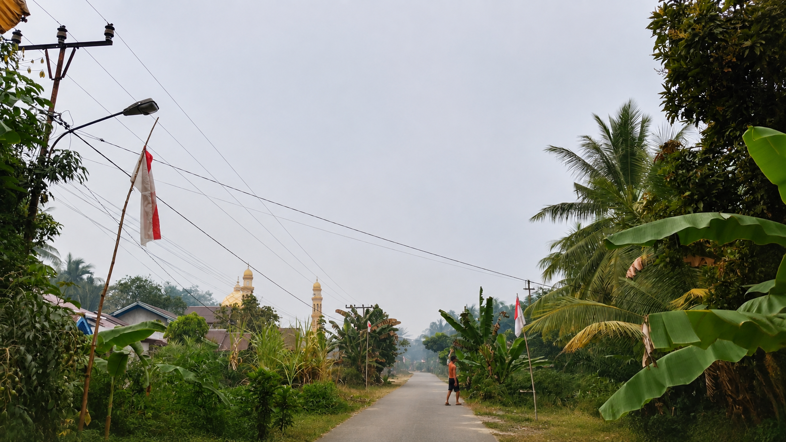

SELAMAT DATANG
Desa Serunai
Selamat datang di website Desa Serunai. Website ini berisi informasi sederhana mengenai profil, fasilitas, lingkungan, dan kegiatan masyarakat desa.
Lihat Profil Desa
Suasana Desa
ALAMAT DESA
Desa Serunai
Jalan: Jl. Serunai, Dusun Cempaka
Kecamatan: Salatiga
Kabupaten: Sambas
Provinsi: Kalimantan Barat
SEKILAS DESA
Nyaman, Asri, dan Bersama
Desa Serunai memiliki suasana pedesaan yang tenang dengan lingkungan yang masih asri. Kebersamaan menjadi salah satu hal yang penting dalam kehidupan masyarakat.
Lingkungan
Lingkungan desa yang nyaman dan masih asri.
Fasilitas
Beberapa fasilitas yang mendukung kehidupan masyarakat desa.
Kebersamaan
Masyarakat menjaga hubungan dan kebersamaan antarwarga.